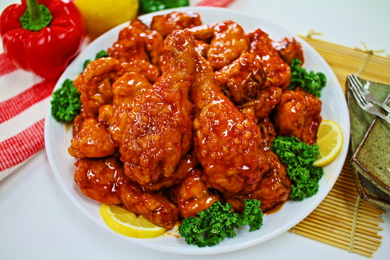

Korean Hot Wings

Description
Finger-licking good, Korean-style hot wings made easy and simple. The sauce can be made up to two weeks ahead of time; flavor will intensify.
Ingredients
- Soy Sauce
- Brown Sugar
- Ketchup
- Barbeque Sauce
- Minced Garlic
- Rice Wine Vinegar
- Garlic Sauce
- Ground Black Pepper
- Sesame Oil
- Fresh Ginger
- Cornstarch
- Water
- Peanut Oil
- Chicken Wings
Steps
- Stir soy sauce, brown sugar, ketchup, barbeque sauce, garlic, vinegar, chile-garlic sauce, pepper, sesame oil, and ginger together in a saucepan; bring to a boil.
- Whisk cornstarch and water together in a small bowl; stir into sauce. Remove from heat and set aside to cool and thicken.
- Heat oil in a deep-fryer or large saucepan to 360 degrees F (182 degrees C).
- Season chicken wings with lemon-pepper seasoning.
- Fry chicken wings in batches of 6 to 8 at a time in hot oil until no longer pink at the bone and the juices run clear, 6 to 8 minutes per batch. An instant-read thermometer inserted into the meatiest part of the wing, near the bone, should read 165 degrees F (74 degrees C).
- Place cooked wings into a large mixing bowl. Ladle sauce over the wings and toss to coat.
Home